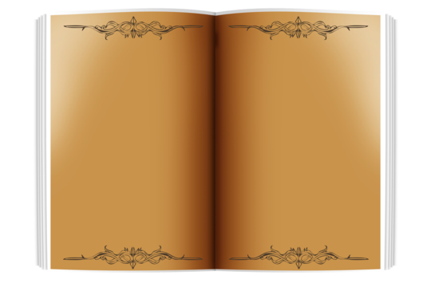

Fulgor dos Deuses
A Cripta de Keenn
Mapas
Personagens
Diários
Lojas
Missões
Compêndios
Chat
Diários
6 itens

Mestre Arsenal
Protetora Fullgori
sequencerDatabase
Cicatrizes de Keenn
Guardião das Cinzas
Thalgrimm Sangue de Ferro